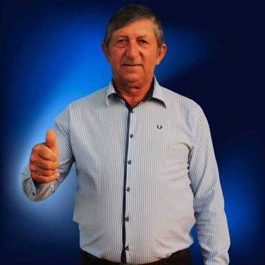

Quem é Nestor Kenear?🤔
Por: Caio Emanuel Almeida Bezerro
Nestor Kenear é um agricultor e político brasileiro, atualmente exercendo o mandato de prefeito do município de Boa Ventura de São Roque, no estado do Paraná. Eleito pelo MDB, ele assumiu administração municipal para o quadriênio 2025-2028!